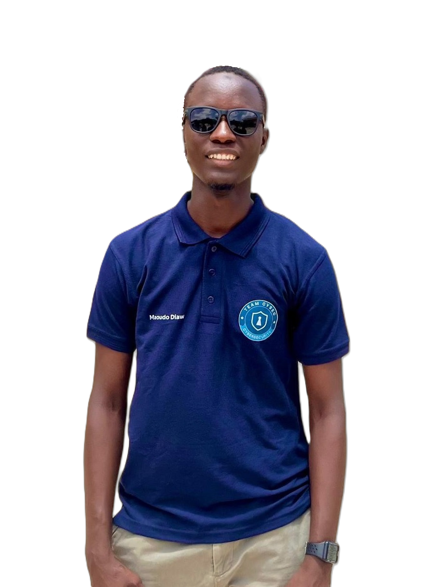

Étudiant en L3 Réseaux Informatiques à l'Université Gaston Berger — en route vers un poste d'Analyste SOC. Réseaux, sécurité, et code C/C++ au quotidien.

Étudiant passionné en Licence 3 Informatique — option Réseaux à l'UFR SAT, Université Gaston Berger. Je m'oriente vers la résolution de problèmes techniques et la cybersécurité, avec l'ambition de mettre mes compétences en administration réseau et développement au service d'infrastructures fiables.
Mon objectif : devenir Analyste SOC, évoluer dans les réseaux et la sécurité informatique, et participer activement au développement numérique du Sénégal.
Ce que je pratique au quotidien, entre labs réseaux et développement.
Une sélection de mes TPs, labs et projets personnels — le reste est sur mon GitHub.
Collection organisée de mes TPs et exercices C/C++ de la L1 à la L3 : Algo 1 à 4, POO, projets de cours.
github.com/Maoudo-4/Octopus-Codes →Structures de données et algorithmes avancés en C : fichiers en-tête et implémentations associées.
github.com/Maoudo-4/ALGOIV →Travaux de cours magistral : manipulation de chaînes de caractères et structures en C.
github.com/Maoudo-4/CM_ALGO4 →Projet personnel : plateforme de location immobilière au Sénégal, de l'idée à l'implémentation.
voir sur mon profil →Réseaux, cybersécurité, développement — n'hésitez pas à me contacter pour en discuter.